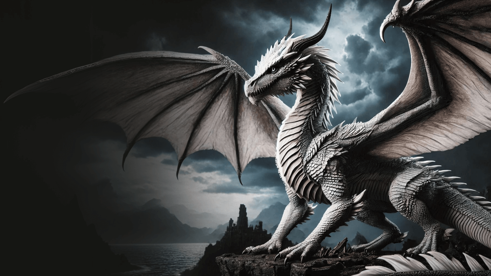
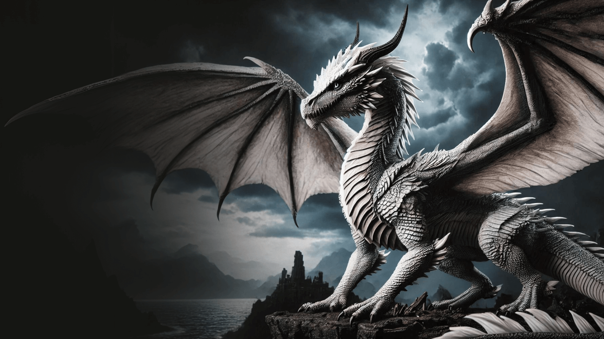

Balerion
Balerion, conhecido como "O Terror Negro," foi o maior e mais temido dragão da Casa Targaryen na história de Westeros. Seu tamanho colossal e suas chamas capazes de derreter aço o tornaram uma arma de destruição em massa. Ele foi montado por Aegon, o Conquistador e viveu por mais de 200 anos. Sua presença era sinônimo de poder e medo.
Syrax
Syrax é a dragão montada por Rhaenyra Targaryen. Ela é uma fêmea de grande porte, ágil e feroz, com escamas de cor amarela. Ao contrário de dragões mais selvagens, Syrax foi criada em cativeiro, o que a torna menos experiente em batalhas do que alguns de seus pares. No entanto, sua lealdade à Rhaenyra e sua força fazem dela uma peça-chave nos eventos que levam à guerra conhecida como Dança dos Dragões.
Arrax
Arrax é o jovem dragão montado por Lucerys Velaryon. Embora menor e menos experiente do que outros dragões, Arrax é rápido e ágil, com escamas de cor clara. Ele desempenha um papel importante durante a Dança dos Dragões. Seu vínculo com Lucerys é forte, mas sua inexperiência em batalhas acaba sendo um fator decisivo em eventos trágicos durante o conflito.
Caraxes
Caraxes, também chamado de Wyrm de Sangue e Verme Sangrento, é um dos dragões mais temidos e experientes. Montado por Daemon Targaryen, Caraxes é um dragão de grande porte e tem uma aparência distinta com um corpo serpentino e comprido, além de escamas vermelhas. Caraxes é extremamente agressivo e feroz em combate, seu temperamento selvagem e lealdade a Daemon fazem dele uma arma letal nas batalhas aéreas.
Seasmoke
Seasmoke é um dragão de escamas cinza prateado, montado por Laenor Velaryon. Era grande o bastante para combate durante a dança, mas ainda um jovem dragão. Conhecido por sua agilidade e velocidade, Seasmoke é um dos dragões mais apreciados por seu desempenho estratégico e sua habilidade em realizar manobras rápidas e precisas.
Vermax
Vermax é um jovem dragão, que nasceu de um ovo colocado no berço de Jacaerys Velaryon, o filho mais velho de Rhaenyra, para que os dois tivessem uma ligação desde a infância. Vermax possui escamas verde-oliva e membranas laranja nas asas. Apesar de não ser o maior dos dragões, sua habilidade em combate e sua conexão com Joffrey o tornam uma figura significativa nas intrigas e batalhas de House of the Dragon.
Vhagar
Vhagar é uma dragão-fêmea e de aparência imponente, com escamas de cor bronze escuro e um fogo devastador. Montada por Aemond Targaryen em House of the Dragon, é a única sobrevivente das três feras que participaram da conquista de Westeros, tendo sido montada anteriormente por Aegon I, o Conquistador e Visenya Targaryen.